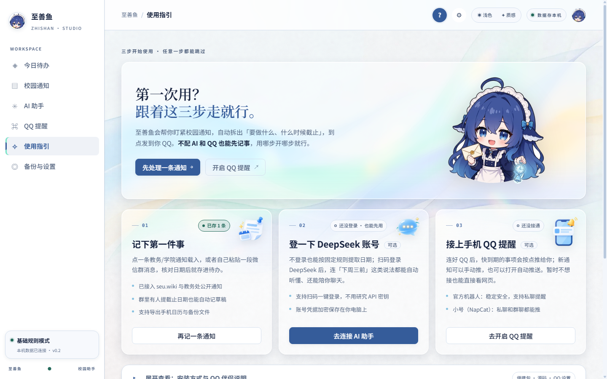
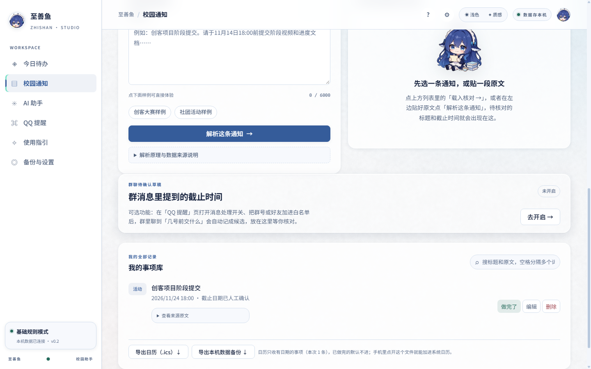
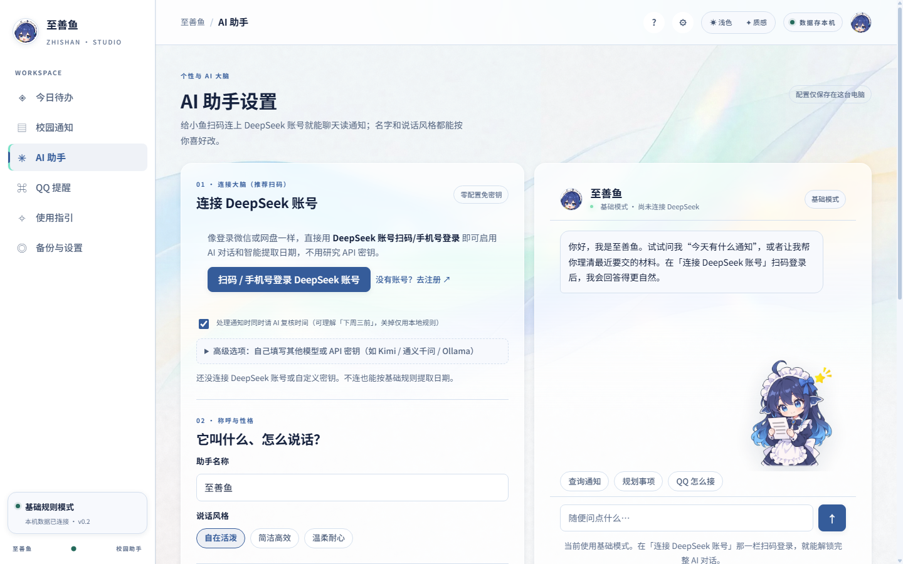

至善鱼把教务处、学院和群里的通知拆成「要做什么、什么时候截止」，你核对一遍再存，到点前推送到你的 QQ。没有大模型也能用，数据默认只在你自己的电脑上。
网页版是免登录试用档：不用注册，打开就能管事项；不含 QQ 推送和截止提醒。
核心原则：程序只给候选，写进事项库的永远是你亲手确认过的内容。
粘一段通知原文，或从 seu.wiki、教务处公开页面、你自己添加的 RSS 订阅里点一条载入。
规则先读一遍日期、时间、地点和是否截止；配了模型会再读一遍，专门处理「下周三前」这类说法。
确认页标明每个日期是规则读的还是模型读的，两边不一致会直接标出来，确认后才入库。
截止前 24 小时和 2 小时各推一次到 QQ；也能导出 .ics，加进手机系统日历。
截图均为演示数据，不是真实同学的通知。
第一次打开的三步引导：记下第一件事、登录 DeepSeek 账号、接上 QQ 提醒。后两步都能跳过，跳过的部分就先不工作。

左边贴原文、解析，核对后确认入库。事项库支持全文搜索；事情做完点「做完了」，不再提醒，数据仍保留。底部可导出日历和本机备份。

扫码登录 DeepSeek 账号即可启用对话和智能提取日期，不用自己申请 API 密钥；也可以填其他兼容接口。名字和说话风格都能改。

两个版本是同一套代码，能力边界不同。
| 桌面版（Windows 便携包） | 在线网页版 | |
|---|---|---|
| 怎么用 | 下载一个 exe，双击运行，免安装 | 浏览器打开，手机也能用 |
| 数据在哪 | 你自己的电脑：%LOCALAPPDATA%\Zhishanyu | 服务端按浏览器分档保存；换浏览器或清浏览器数据就找不回，记得导出备份 |
| QQ 推送、截止提醒 | 有 | 没有 |
| 大模型 | 可选：扫码登录 DeepSeek 账号，或填 OpenAI 兼容接口密钥 | 浏览器侧调用云端模型 |
.md / .txt 提示词，分别绑定到两条 QQ 通道；通知正文不会被改写。桌面版的设计前提是「只给你自己用」。
按实际验证结果写，没验证过的不写成已完成。
想先看看，用网页版；要 QQ 提醒，用桌面版。
单文件便携包，约 106 MB，Windows x64。放到不会被清理的目录再运行。